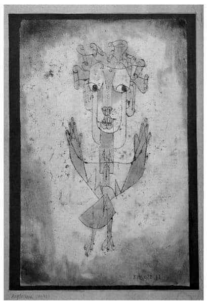
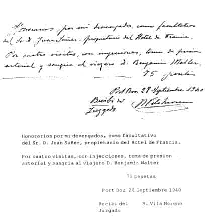

7.4.
Alman Yas Oyununun Kökeni’ni yazan Walter Benjamin (1892-1940), Theophrast/Aristoteles söyleminde, 20. yüzyılın yaratıcı, entelektüel, melankolik kişiliklerinden biridir.
Benjamin’in, bugün “ilk bakışta” insanların düşüncelerinden önce gönüllerinde sıcacık bir yer oluşturmasında, dünyanın tüm acılarını/trajedisini içselleştirmiş izlenimi veren melankolik kişiliğinin –yaydığı aura’nın– etkisi çoktur.
O, eleştirel aklın, çok anlamlı (ambivalenz) düşünmenin yaratıcı büyüsünü duyumsamış, büyük entelektüel kapasitesiyle, her-dem hüzünlü kişiliği, yapıtları, sürgün yılları, çelişkileri/kararsızlığı, içtenliği, intiharı, mezarlıktaki kemiklerinin bile kayboluşu, yitip gidişiyle yüzyılın belki de en örnek –melankolik– insanıdır.
Walter Benjamin, 15 Temmuz 1892 tarihinde, Berlinli varsıl bir Yahudi ailesinin çocuğu olarak dünyaya gözlerini açmıştır. Büyük burjuva, kapitalist ekonomi-politiği ve Yahudi-dinbilim norm sistemlerini içeren son derece katı –ruhsuz, tekdüze, soğuk, amaçsız ve idealsiz– bir eğitim sistemiyle karşılaşmış.40 Ve daha ilk gençlik yıllarından itibaren, dış-dünya, toplumsal kitle ile kendisi arasında –geri dönüşsüz– bir uçurum oluşmaya başladığını duyumsamıştır. 1900 yılları Almanya’sında toplumun sürekli ırkçı eğilimlere kayışı, ekonomik/kültürel/tinsel yoksullaşmasına ve barbarlaşmasına koşut olarak artan dinsel fanatikleşmeyle birlikte, Walter Benjamin’de de “yumuşak bir yabancılaşma”41 ile içine kapanma eğilimi başlamıştır. Bu durum, Benjamin’in özellikle liseyi bitirdiği 1910 yıllarında çektirdiği fotoğraflardaki yüz ifadelerinde olanca açıklığıyla görülebilir.
İzleyen yıllarda Berlin, Münih ve İsviçre’de felsefe okumuş. Birinci Dünya Savaşı’nın başlaması ve yakın arkadaşı, şair Fritz Heinle ile sevgilisi Rika Seligson’un ortaya çıkan barbarlaşmayı protesto için birlikte intihar etmeleri, Benjamin’i çok yönlü etkilemiş. Ancak yeteri kadar anlaşılamayan nedenlerle, Walter Benjamin de Kirchner benzeri “zorunlu gönüllü” olarak iki kez orduya katılmak için başvurmuş. Fakat Benjamin’in bu istemi, her iki keresinde de sağlık sorunları nedeniyle geri çevrilmiştir. Bu ara, 1913 yılında, ilk kez Paris’e gitme olanağı bulmuş. Fransa ve özellikle de Paris, Benjamin’i çok etkilemiş. Benjamin’de Paris’e bir yaşam boyu süren ve ileride yazacağı hemen hemen tüm yapıtlarına yansıyan yoğun ve çelişkili bir tutku başlamıştır.
Walter Benjamin’in entelektüel birikiminde, Kant’ın, Goethe’nin, Hölderlin’in, Karl Marx’ın önemli yerleri olmuş. Benjamin’in Marx’a yaklaşımında, Lukács’ın, Ernst Bloch’un ve sonra da aralarında büyük dostluk başlayan Brecht’in etkisi olmuş. Öte yandan Benjamin’deki eleştirel düşüncenin gelişmesine, Frankfurt Okulu’nun iki büyük kurucusu Adorno ile Horkheimer önemli katkılarda bulunmuşlardır. Ayrıca, gençlik arkadaşı, yazar, ozan, filozof Gerhard (Gershom) Scholem (1897-1982), Benjamin’i Yahudi dinbilimini incelemeye ve İbranice öğrenmeye, hatta Kudüs’e gidip yerleşmeye ikna etmeye çalışmıştır.
O, her zaman büyük kent yaşamının insanı olmuş, tüm yaşamı boyu, duygu ve düşüncelerini, “büyük kent pıhtılaşması” içindeki bazı küçük “yaşam alancıklarında” yoğunlaştırıp buralardan yakaladığı ayrıntılardan bütün üzerine genellemeler yapmaya çalışmıştır. Benjamin, Alman Üniversitelerinde eğitim görmüş. Karl Marx’a ve Marksizme saygı duymuş. Benjamin’in kendi tanımlamasıyla, yaşayan en büyük Alman şairi Brecht’i çok yakından tanımış. Paris komüncüleri üzerine yazılar yazmış. Ama en çok Kafka’yı, Proust’u ve Baudelaire’i sevmiş. Asıl benliğini, bu üç yazarda bulmuştur. Benjamin’in Proust’a yakınlığı, Baudelaire’in Edgar Allan Poe ile olan duygusal ilişkisine benzetilir. Walter Benjamin de olasılıkla, kendisine benzediği için Proust’u sevmiş. Fakat başyapıtı sayılabilen Pasajlar’da Paris’i daha çok Baudelaire ile birlikte, Şato’ya tırmanırcasına dolaşmıştır.
Jacques Riviéres’in Proust üzerine söylediklerini belki gene kendisini de çok iyi anlattığı için vurgulayarak anımsamıştır hep. Olağanüstü bilgece bir tanımlamadır bu: Jacques Riviéres şöyle der: “Proust’un ölümüne, yapıtlarını yazmasını sağlayan deneysizlik neden oldu... Proust, ateş yakmasını ve pencereyi açmasını bilmediği için öldü...”. J. Riviéres, kendisi için de benzer bir durumun söz konusu olduğunu söyler ve “ben, bugün bile, bir fincan kahve pişiremem,”42 diye vurgular. Berlinli melankolik Yahudi Walter Benjamin, Alman Yas Oyununun Kökeni’nini yazar; Karl Marx’ın Kapital’inin belki de en etkili açılımını Pasajlar çalışmasında getirir. Proust, Kafka, Baudelaire, modernizm, tüketim toplumunun günümüzde geldiği durum üzerine olağanüstü araştırmalar yapar, fakat Gestapo’nun kendisini tutuklayacağı son günlere değin, Paris’i terk etme kararını veremez (vermez). Kararsızlıktan haz duyarcasına son günlere değin bekler... Entelektüel insanların kaçınılmaz yazgısı belki de budur. Amerika’ya giden Adorno’nun durumu, Benjamin’den –ve diğerlerinden– pek de farklı değildir. New York’ta Radyo Araştırmaları Merkezi’nde çalışırken, aynı projede yer alan Lazarfeld, diğer arkadaşlarına, Adorno için şunları yazar: “Tıpkı sizin düşündüğünüz gibi, gündelik işlere yetecek aklı kalmamış bir Alman profesörüne benziyor. Öylesine tuhaflıklar yapıyor ki, sanki Mayflower Derneği günlerindeymişiz gibi davranıyor. Ama kendisi ile oturup iş üzerine konuşmaya başladığınızda akıl almaz bir bollukta, bir yığın ilginç düşünceyle karşılaşıyorsunuz... Söylediklerine kulak vermeye başlayınca dediklerinin çoğunun yabana atılır şeyler olmadığını görüyorsunuz.”43
Fritz J. Raddatz, Melankoli ve Başkaldırı adlı araştırmasında, entelektüellerin sınıf savaşı içindeki durumlarının bu tür bir tuhaflıkta olduğunu söyler.44 Pek çok entelektüel, tarihin düğümlerini çözmeye çalıştığını sanırken, polislerin odalarını basmalarından önce, yazdıklarını postaya ya da sobaya atmayı akıl edememişler, bu tür bir karar verememişlerdir...
Melankolik kişiliği tüm yakın arkadaşlarının ilgisini çekmiş; pek çoğu, bu konudaki düşüncelerini ve kaygılarını yazmışlardır.45 Gershom Scholem, Benjamin’in gençlik yıllarından beri sürekli yorgun ve hüzünlü olduğunu, bu bağlamda melankolik kişiliği ile yapıtlarının hep bir bütünlük oluşturduklarını söylemiştir.46 Jean Selz, Benjamin’in katıksız bir entelektüel insan tipi olduğunu, kaba ve olumsuz bir olayla karşılaştığında, oturduğu koltukta kocaman bir kirpi gibi kendi içine kapandığını ve artık onu uzun bir süre konuşturmanın olanaksızlaştığını anlatmıştır.47
Walter Benjamin’i Fransa’dan İspanya’ya Pirene Dağları üzerinden kaçıran anti-faşist direniş örgütü üyelerinden, Lisa Fittko ve kocasının anılarında, Benjamin’in, “günlük yaşamın sorunlarının üstesinden kalkmayı bilemeyen, soğuktan ya da yağmurdan nasıl korunacağını beceremeyen, doğuştan şanssız, sürekli hüzünlü, yorgun ve zamanından önce yaşlanmış gibi görünen insanlardan olduğunu” söylemişlerdir.48, 49
Kişiliğindeki melankolik eğilimler zamanla artmış. 1931 yılında, son derece ciddi bir intihar hazırlığı yapmış. Çocukluk anılarını yazmaya başlamış. Vasiyetnamesini hazırlamış. Yakınlarına son mektuplarını kaleme almış. Ancak bir süre sonra bu son derece gergin ruhsal durum görece dinginleşmiştir.50 Ne politikada ne dinde ne de bilimde kendisini huzurlu ve mutlu duyumsayabilmiş;51 Yaşamın anlamını ve hazzını çelişkilerde bulmuş insanlardandır. Benjamin, labirentlere girdikçe netleştiğini ve saydamlaştığını duyumsamış. Tek başına kaldıkça bütünlüğe ulaşabileceğini düşünmüştür.
Onun gizemi, gücünü çelişkilerden almıştır: Alman/Yahudi; dış-dünya/iç-mekân; koleksiyon tutkusu/dünyayı gezmek, elindeki her bir şeyi tüketmek istemi; kalabalıklar içinde yaşama/kent kitaplıklarından çıkamama; materyalizm/dinbilim; bireysel özgürlük/parti üyeliği; mesihlik/organize kötümserlik; harmoni/felaket; politika/sanat; devrimci başkaldırı/intihar istemi; Berlin/Paris ve en ağırı, Brecht/Adorno... Benjamin’in yaşadığı çelişkilerin sadece birkaçı, ilk akla gelenleri olabilir.
Walter Benjamin’in bu çelişkileri ölümünden sonra da sürmüş. Adı ile soyadı karıştırılınca, Yahudi Benjamin, Katolik Walter olarak Katolik mezarlığına gömülmüştür. Tek bir sözcüğün vazgeçilmez önemi, adlandırılmalar ve kavramlar üzerine ömrü boyu yazı yazan Walter Benjamin’in bugün mezarı bile karışmış. Kemiklerini bulmak olanaksızlaşmıştır.
“Ben” sözcüğünü hiç kullanmadan bir kitap yazmak istemiş. Tutuklanıp, toplama kampına kapatılıp, günde birkaç kez, adını/soyadını/doğum tarihini söylemeye zorlandığında, kendisini mutlaklaştırdıklarından (“verabsolutiert”) yakınmıştır...52
Notlarını yazmaya Proust ile başlamış, Kafka ile devam etmiş... Sonra, Baudelaire üzerine düşündüklerini yazmış... Paris sokaklarını Proust ve Baudelaire ile birlikte, Kafka’nın roman kahramanı Josef K. gibi dolaşmıştır. Yazın, felsefe, politika, tarih, dinbilim gibi disiplinlerin birbirleriyle çakıştıkları sınır alanlarında, disiplinler arası bölgede “metafizik hakikati” (Scholem) aramıştır.
Hep, “tarihin tüylerini tersine fırçalamaya çalışmış”.53 Paris’in kültür birikimine hayran kalmış. Ve hemen ardından, “Hiçbir kültür belgesi yoktur ki aynı zamanda barbarlık kanıtı olmasın”54 diye yazmıştır.
Walter Benjamin, tam bir “Satürn Çocuğu” gibi haz dolu bir hüzünle yaşamış ve özgün bir seçimle, yaşamını kendi elleriyle noktalamıştır.
Ona göre, kalabalıklar içinde tek başına “yürüyerek düşünen” ya da “düşünerek yürüyen”, politik suskunluk içindeki hüzünlü aydın, “flâneur/aylak”, entelektüel insanın tümüyle yitip gitmeden önceki son tinsel dengeli görünümüdür... Bu görünüm aynı zamanda Hölderlin’in kahramanı Hyperion’un (da) son bir kez terk edilmiş ve toplum dışı kılınmış “ver-rückt” (Heidegger) durumunun “yansımasını” da kapsamaktadır.55
Adorno, “flâneur”ün görünümünün daha başından beri yansıma olduğunu, onun gerçekte hep odasında gezindiğini söylemiştir.56 Burada aklımıza hemen “örümcek yuvasına benzeyen” odasından hemen hemen hiç çıkmadan yaşayan Raskolnikov gelir. Pek çok yazar57 ve bu arada Heiner Müller, ölmeden önceki son bir söyleşisinde, bu aydın tipinin, zaten diğer bir “Satürn Çocuğu” olan Hamlet ile birlikte “bundan sonrası sessizlik” diyerek çoktan ortadan kalktığını vurgulamışlardır.
Her şeye karşın entelektüel insanın bu son yaşama çabası bile kısa zaman içinde son bulmuş. Özellikle, otoriter sistemlerin yönetimlere gelmelerinden sonra, dünyanın hemen hemen her yerinde, bu son tinsel dengeli konumuyla yaşamaya çalışan melankolik flâneur tipler de toplanmaya ve kamplara gönderilmeye başlanmıştır.
Nazilerin yönetime gelmeleri tüm Avrupa’nın, Almanya’nın ve Berlin’in yaşama koşullarını değiştirmiştir. Özellikle, Almanya’da entelektüel insanlar dağılmış, Benjamin, Berlin’deki çevresini, evini, kitaplığını, arşivini, yakınlarını, kardeşlerini yitirmiştir.
Benjamin’in erkek kardeşi, Georg Benjamin (1895-1942), ilk gençlik yıllarından beri parlak bir aydın hekimdir. Büyük bir canlılık (vitalite) ile Alman Komünist Partisi içinde çalışmış. Berlin bölgesi yönetimlerinde görev almış. Fakat sonradan, Naziler tarafından tutuklanmış. Mannhausen toplama kampında öldürülmüştür. Benjamin’in son derece zarif kuzeni, şair Gertrud Kolmar, gene Naziler tarafından tutuklanmış. İlk kez 1941 yılında, Berlin’de fabrikalarda zorunlu –tutsak işçi olarak– çalıştırılmış. Sonra 1942 yılında, Auschwitz toplama kampında öldürülmüştür. Kız kardeşi Dora Benjamin, önce Paris’e geçebilmiş. Fransa’da çeşitli toplama kamplarında kalmış. Sonra İsviçre’ye kaçmış. Ancak zorlu yaşam koşullarında yorulan ve hastalanan Dora da savaşın bitiminden hemen sonra, 1946 yılında genç yaşında ölmüştür. Eşi Dora Pollak ile oğlu Stefani, Londra’ya kaçmışlar. Ancak gene her ikisi de aşırı ruhsal-bedensel yorgunluk nedeniyle genç yaşlarında ölmüşlerdir.
Walter Benjamin, Nazilerin Almanya’da yönetime gelmelerinden altı hafta kadar sonra, 17 Mart 1933 tarihinde, –artık bir daha geri dönüşü olmayan– sürgün yaşamına başlamış. Çok sevdiği Paris’e gitmiş. Ancak kısa zamanda, gezi ile sürgün arasındaki trajik farkı görmüştür. Sürgün, gezinin tüm romantik, serüvenli, coşku veren yoğun kültürel boyutunu tahrip etmiş. Büyük ekonomik zorluklarda yaşamı ayakta tutma sorunu ön plana çıkmış. Benjamin, bu ara en az 18 kez ev değiştirmek zorunda kalmıştır.58 4.7.1939 tarihinde Alman yurttaşlığından çıkarılmış. Fransa’nın Almanya ile sıcak savaş olasılığının başladığı Eylül 1939 tarihinden sonra, Fransızlar tüm Almanları istenmeyen kişiler ilan etmişler ve kamplarda toplamaya başlamışlar. Benjamin de Paris yakınlarındaki Nevers (Niévre) toplama kampına gönderilmiş. Burada Benjamin’in bedensel ve ruhsal sağlık durumu daha da bozulmuş. Kalbindeki rahatsızlıklar artmış.
Kamplarda kaldığı günlerde, Max Aron adlı bir genç, Walter Benjamin’e çok yardım etmiş. Max Aron, sonradan –Benjamin’in yakınlarının isteği üzerine– bu kamp günlerini ayrıntılarıyla yayımlamıştır. Max Aron’un anıları şöyle özetlenebilir: “Kamplarda günlük yaşam çok zordu. Küçük bir alana beş bin erkek kapatılmıştı. Üzerinde yatacak kuru ot bulmak bile olanaksızdı. Betonun üzerine yatıyorduk. Beş bin kişi için bir tek musluk vardı. Yemekler felaketti. Dört yetişkin erkeğe günde bir ekmek ve bir kutu konserve veriliyordu. Bütün gün muslukta sıra bekleniyordu... Bir ara yaşlı bir adam dikkatimi çekti. Suskun, hüzünlü, hareketsiz duruyordu. Elli yaşının üstünde yoktu ama çökmüştü... Günlük yaşam kavgası sürüyordu. Sonra gene baktım, yaşlı adam, düşüncelerinin içine gömülmüş, hep aynı yerde, suskun, hareketsiz duruyordu. Yardım etmek istedim. Adının Walter Benjamin olduğunu öğrendim. Yazarmış, Proust’u Almanca’ya çevirmiş... Ancak bulunduğu ortama uymayan bir insandı... Kampa yeni yeni insanlar geliyordu... Bunlardan, Walter Benjamin’i tanıyanlar çıkıyordu. Walter Benjamin, kamp koşullarında tümüyle çaresizdi... Başka kamplara gönderilecektik. Biz bir grup arkadaş, Benjamin’i bırakmadık, birlikte Nevers kampına gönderildik. Burada koşullar biraz daha elverişliydi. Benjamin’in görece rahat yaşayabileceği bir köşe oluşturduk. Bir döşek, bir masa, küçük dolap gibi şeyler. Tinsel çöküntüyü önlemek için, kamp korosu kurduk. Hatta bir kamp gazetesi çıkarmaya karar verildi. Walter Benjamin de bu konuda bazı öneriler getirmişti... Ama bedensel ve ruhsal sağlığı günden güne bozuluyordu. Sonunda bazı arkadaşlarının yardımıyla da kamptan çıkarıldı.”59 Aynı kampta bulunan ve Max Aron’un söylediklerini doğrulayan Hans Sahl, bu ara Benjamin’in en büyük tutkusunun, “Bir kahvenin terasına oturup, tembel tembel başparmaklarını döndürmek” olduğunu söylemiştir...60
Sonra pek çok yazar, politikacı dostlarının da araya girmesiyle, kasım ayının sonlarına doğru, Walter Benjamin’in sağlık nedenlerinden dolayı Nevers kampından çıkarılmasına ve Paris’e dönmesine olanak tanınmış. 25 Kasım 1939 tarihinde yeniden Paris’e dönebilmiş. Max Aron, sonradan Walter Benjamin’den pek çok mektup aldığını bunlarda pek çok şeyler anlattığını ama hiçbir zaman onun gerçek kimliğini tanıyamadığını, çünkü kendisinden hiç söz etmediğini yazmıştır...
Bu ara hiçbir yerde, ne politik ne dinsel-inançsal ve ne de bilimsel bir ortam/yurt bulabilmiş;61 büyük kararsızlıklar içinde kalmıştır. Brecht, kendisini Danimarka’ya, Adorno Amerika’ya, Scholem Kudüs’e çağırmıştır... Brecht’in materyalizmi, Adorno’nun, –kimi zaman haklı da olsa, bitip tükenmeyen– eleştirileri, Scholem’in Yahudi dinbilim tarihi, Benjamin’e hiç de çekici gelmemiş...
Paris’te kalıp Pasajlar çalışmasını sürdürmeye karar vermiş. Ulusal Kitaplık’a kapanmıştır...
Paul Klee, Birinci Dünya Savaşından sonra, “melek” olgusunu yeniden yorumlamaya başlar. Paul Klee’nin melekleri artık Rönesans döneminin meleklerinden çok farklıdır...
Meleklerin dış görünüşleri, onların iç yapılarına uygun biçimde dönüşüme uğramıştır.
Klee’nin, 1920 yılındaki Angelus Novus çalışması Walter Benjamin’i çok etkiler. Bir tane edinir. Angelus Novus, Benjamin’in yaşamında önemli rol oynar.
En sıkıntılı günlerinde Tarih Kavramı Üzerine çalışırken, IX. Bölüm’de bu konu üzerine yazdıkları günümüz koşulları için de tüm canlılığıyla geçerlidir.
“Klee’nin Angelus Novus adlı bir resmi vardır. Bir melek betimlenmiştir bu resimde; meleğin görünüşü, sanki bakışlarını dikmiş olduğu bir şeyden uzaklaşmak ister gibidir. Gözleri, ağzı ve kanatları açılmıştır. Tarihin meleği de böyle gözükmelidir. Yüzünü geçmişe çevirmiştir. Bizim bir olaylar zinciri gördüğümüz noktada, o tek bir felaket görür, yıkıntıları birbiri üstüne yığıp, onun ayakları dibine fırlatan bir felaket. Melek, büyük bir olasılıkla orada kalmak, ölüleri diriltmek, parçalanmış olanı yeniden biraraya getirmek ister. Ama cennetten esen bir fırtına, kanatlarına dolanmış ve bu fırtına öylesine güçlüdür ki, melek artık kanatlarını kapayamaz. Fırtına onu sürekli olarak sırtını dönmüş olduğu geleceğe doğru sürükler; önündeki yıkıntı yığını ise göğe doğru yükselmektedir. Bizim ilerleme diye adlandırdığımız, işte bu fırtınadır.”62

Paul Klee, Angelus Novus, 1920.
Alman orduları, 9 Nisan 1940 tarihinde Danimarka’yı ve Norveç’i, 10 Mayıs’ta Hollanda ve Fransa’yı işgal etmeye başlamış. 20 Mayıs 1940 tarihinde Auschwitz toplama kampı örgütlenmesini tamamlamış ve tüm Avrupa’daki Yahudiler, sosyalistler, komünistler, demokratlar, şizofrenler, melankolikler toplanmaya ve yok edilmeye başlanmıştır.
Walter Benjamin, 14 Haziran’da Alman ordularının Paris’e girmeye başlamalarından sonra Paris’ten Lourdes’e gitmiş. Burada kız kardeşi Dora ile birlikte kalmış. Bu olağanüstü karışık durumda, Benjamin bir ara Londra’ya gitmeyi düşünmüş. Sonra, Carl Jacop Burkhard ile mektuplaşmış. İsviçre’ye geçmek isteminden söz etmiştir. Walter Benjamin, 2 Ağustos 1940 tarihinde Lourdes’den Adorno’ya, “pek çok haftadan beri, varlığıma gelecek günlerin, saatlerin ne olacağının bilinmezliği hâkim...”63 diye yazmış, sonraki günlerde neler yaptığı pek bilinemiyor. 16 ile 20 Ağustos 1940 tarihleri arasında, olasılıkla, 17 ya da 18 Ağustos’ta, Marsilya’ya gitmiş olabileceği sanılıyor. Marsilya’da, Hans Sahl, Siegfried Kracauer, Fritz Fränkel, Arthur Koesther, Hilde Schroeder-Berthon gibi pek çok eski arkadaşıyla karşılaşmış... Gene bu ara Walter Benjamin’in, Marsilya’da nerede kaldığı, hangi otellerde gecelediği bilinmiyor. Buradan yazdığı mektuplarını posta kutularından atmış.64
Arthur Koestler anılarında, “Marsilya’dan ayrılmadan kısa bir süre önce eski dostum Walter Benjamin’e rastladım. Onun da İngiltere’ye gitmek için Pirenelerden geçme hazırlığı içinde olduğunu öğrendim. Yanında, gerektiğinde bir atı bile öldürebilecek miktarda morfin tableti bulunduğunu söyledi, her türlü olasılığa karşın bunlardan yarısını bana verdi,”65 diye yazmıştır.
Walter Benjamin, bu ara Fransa çıkış vizesini alamamış. Buna karşın, İspanya ve Portekiz vizelerini almıştır. Benjamin, Marsilya’da tanıştığı Henny Gurland ile on yedi yaşındaki oğlu Joseph’le birlikte, olasılıkla 23 Eylül 1940 tarihinde Marsilya’yı terk etmişler ve Perpignan yönüne giden bir trene binmişlerdir. Küçük grup, İspanya sınırına yakın Post Vander’de trenden inmişler. Burada, Berlin’den gelen anti-faşist direnişçi, Lisa Fittke ile buluşmuşlardır.66
Lisa Fittke, Benjamin’i ve yanındakileri, 25 Eylül 1940 tarihinde Pireneler üzerindeki keçi yollarından sınır köyü, Port Bou’ya getirmiştir. Bu yolculuk, 48 yaşındaki Walter Benjamin için kuşkusuz hiç de kolay olmamıştır. Fakat bu ara ağır ve önemli bir sağlık sorununun olduğu da bilinmemektedir. En azından son derece güvenilir bir insan olan Lisa Fittke, bu konuda bir bilgi vermemiştir.
Walter Benjamin ve yanındakiler, o zamanki adı ile Fonda Francia oteline yerleşmiş. Benjamin, 204 numaralı odayı almıştır. Bu sırada ya da otele girmeden hemen önce, gümrük memurları-polis, Benjamin’e yollarına devam edemeyeceklerini, Fransız çıkış vizesi alamadıkları için Fransa’ya geri dönmek zorunda olduklarını söylemiştir.
Walter Benjamin’in 25-26 Eylül 1940 tarihine kadarki yaşamöyküsü budur. Ancak bundan sonraki saatler –belki de günler– yeterince bilinmemektedir.67 Olasılıkla 26 Eylül 1940 tarihinde, akşam saat 22’ye doğru ya da ertesi günü sabahı odasında, yatağında, giyinmiş halde, ölü bulunmuştur... Bugüne kadar genel geçerli kanıya göre, polisin Fransa’ya geri dönmek zorunda olduğunu söylemesi üzerine, Almanların eline düşmek olasılığına karşı Walter Benjamin –yaşamının en hızlı ve en kolay kararını vermiş– birlikte getirdiği morfin tabletlerini yutarak intihar etmiştir. Marsilya’dan birlikte geldikleri Henny Gurland ve oğlu Joseph Gurland, sonradan yazdıkları anılarına göre, Benjamin’in zorlu nefes alışları dışardan, koridorlardan duyulmaya başlamış. Otele doktor çağrılmış. Doktor geldiğinde Benjamin olasılıkla ölü bulunmuştur.
1940 yıllarının otel yöneticisi Juan Suñer, 27 Temmuz 1979 tarihinde, Punt Diari adlı bir Katalan gazetesinde çıkan söyleşisinde, “Walter Benjamin’in otele geldiğinde normal giriş/kalış formüleri doldurduğunu, ikinci katta dört numaralı odaya yerleştiğini; ancak otele gelen görevlilerin kendisine Fransa’ya geri dönmesi gerektiğini söylediklerini” anımsatmıştır. Joan Suñer’in kanısına göre, “Benjamin odasına çıkmış, sonra soluk alıp verme sesleri otelin giriş katına kadar gelmiş. Akşam saat 22 sularında doktor çağrılmış. Doktor, Benjamin’in odasına girdiğinde, onu ölü bulmuştur.”69
Otel yöneticisi Juan Suñer, 1940 yıllarının koşullarında, Franko İspanya’sı ile Hitler Almanyası’nın gizli polis örgütlerinin özellikle sınır bölgelerinde birlikte çalıştıklarını, Port Bou’da Gestapo’nun çok etkili olduğunu; tüm yolların, otellerin denetlendiğini, özellikle de Yahudilerin izlendiğini... Bu durumu anlayan Walter Benjamin’in korkudan öldüğünü sandığını söylemiştir.
Tutanaklarda, Walter Benjamin’in ölüm nedeni olarak “beyin kanaması” yazılmış ancak buna uygun belirtilerden hiç söz edilmemiştir.
Henny Gurland, Walter Benjamin için Port Bou mezarlığında beş yıl için bir mezar yeri satın almış. Walter Benjamin’in cenazesi, 28 Eylül 1940 tarihinde Port Bou mezarlığında, 563 numaralı bölüme gömülmüştür. Ancak 1945 tarihinde süre dolduğu için, mezarın içindeki kemikler, mezarlığın toplu mezar bölümüne konmuş. 563 numaralı yere başka bir aile mezarlığı yapılmıştır. Bugün, Port Bou mezarlığında Walter Benjamin adına bir mezar yeri yoktur.
Bonn Üniversitesi’nden Ingrid Scheurmann, Walter Benjamin’in ölümünün ellinci yılı nedeniyle bölgede yapılması düşünülen anıt için, öldüğü köy Port Bou’da çalışırken, Belediye Başkanı Francisca Martinez Diaz’ın yardımıyla, Port Bou Belediyesi ve Katolik Kilisesi arşivlerinde, Dr. Benjamin Walter adına açılmış bir dosya bulmuşlardır. Burada, Walter Benjamin’in adı soyadı yer değiştirmiş. Soyadının Walter sanılması nedeniyle dosya “Dr. Walter” adına açılmıştır.
1992 yılında ilk kez gün ışığına çıkan dosyanın içinde şimdiye değin bilinmeyen 9 yeni belge bulunmuştur.
Bulunan bu belgelerle de Walter Benjamin’in ölümü üzerindeki perde yeterince kaldırılamamış. Hatta bölgede çalışan ve Walter Benjamini son kez gören hekim Ramòn Villa Moreno’nun verdiği rapor, durumu biraz daha karıştırmıştır.
28 Eylül 1940 tarihinde, soruşturma yargıcı Fernando Pastor Nietro’nun ve otel yöneticisi Juan Suñer’in isteği üzerine yörede çalışan hekim Ramòn Villa Moreno, el yazısıyla, son derece kısa ve yetersiz bir rapor yazmıştır.70
“Hotel de Francia” yöneticisi Bay Juan Suñer’in isteği üzerine, hekim olarak tarafımdan alınan honorar.
Yolcu, Bay Benjamin Walter, 4 kez ziyaret edilmiş, iğne yapılmış, kan basıncı ölçülmüş, hacamat yapılmıştır.
75 Paseten
Port Bou, 28 Eylül 1940
Ramòn Villa Moreno
İmza
Hekim Moreno’nun verdiği raporda, insanın içine kuşku düşüren pek çok nokta vardır. Moreno, ne zamanları Benjamin’i ziyaret etmiştir? Neden iğne yapmış, hacamat gereğini görmüş, hangi ilaçları kullanmıştır? Bilemiyoruz. Raporda damar basıncı bile yazılmamıştır. Yazılan rapor bilinmezlikler ile doludur. Ayrıca morfin alarak intihar etme olasılığı fazla olan Walter Benjamin’in morfinden sonra gözbebeklerinin çok dikkat çekecek ölçüde küçülmesi beklenirdi ya da resmi ölüm nedeni olarak gösterilen “beyin kanaması” ile ilgili olarak da bazı bulguların yazılması gerekirdi. Raporda bunlardan da hiç söz edilmemektedir.

Ramo Villa Moreno’nun 28.9.1940 tarihinde 21,5 x 13,5 cm. boyutlarında bir kâğıda Walter Benjamin’i dört kez ziyaret ve muayene ettiğini ve bunun için de 75 peseta istediğini yazdığı fatura-rapor.
Otel yöneticisi Juan Suñer ve diğer tanıklar, hekimin geldiği zaman Benjamin’in ölü bulunduğunu söylemişlerdir. Bu nedenle de olasılıkla hekimin ne iğne ne hacamat yapacak ve ne de damar basıncını ölçecek zamanı vardı... Olasılıkla bu rapor, biraz fazla para alabilmek için şişirilmiştir. Hekim Moreno da 1949 yılında öldüğü için soruşturma bu yönden daha fazla derinleştirilememiştir.
Yüzyılın belki de en güzel/etkili auralı melankoliklerinden biri olan Walter Benjamin’in elinde, tutunacağı hiçbir iplik olmadan labirentler içinde geçen çelişkili yaşamı gizemini ölümünden sonra da sürdürmektedir. Benjamin ölümünden sonra da önceki yöntemini sürdürmüş, geriye mezar ve iskelet düzeyinde bile bir bütün değil, alegorik parçalar bırakmıştır. Başka türlü bir söylemle Walter Benjamin’in yaşamı, duyguları, düşünceleri, ölümü ve hatta daha da sonrası “açık yapıt” olma niteliklerini korumaktadırlar.
Alfred Andersch, Benjamin’in ölümünden sonra yazdığı şiirinde, onun çelişkilerinin ölümünden sonra da sürdüğünü, Benjamin’in gökyüzünde de “Kutsal Tin ile Lenin” arasında kaldığını yazmıştır.
Walter Benjamin’e
ispanya sınırında anlamıştın
sonunun geldiğini
...
amacın bu değildi senin
benjamin
pariste kalmayı isterdin
gri-mavi caddelerde
baudelaire ile birlikte
berlinli zarif bir yahudiyi
bekliyor lenin
ve kutsal tin